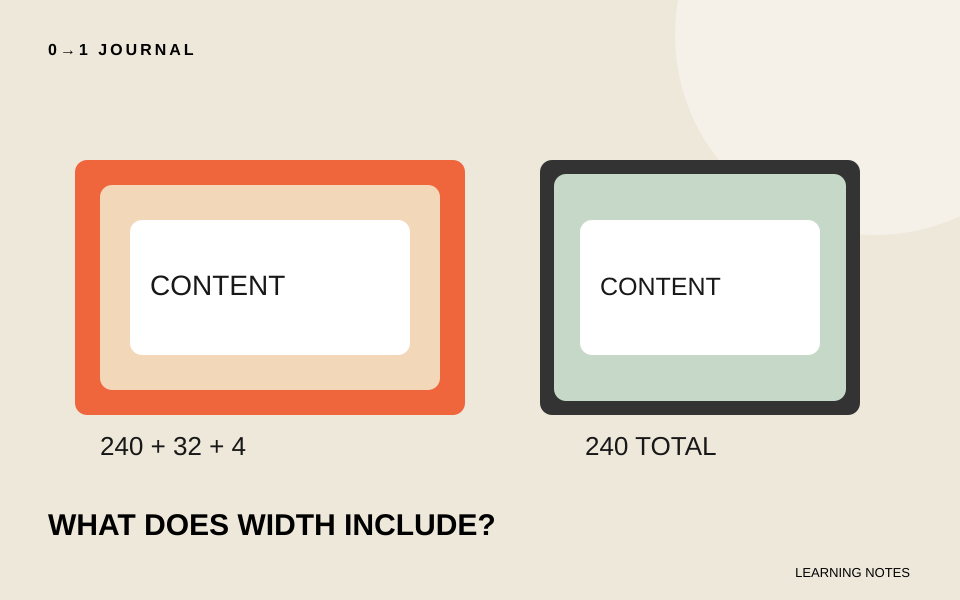

幅を240pxにした二つの案内欄で、片方へ余白を足したら右端がずれた。box-sizingで幅をそろえるには、widthが内容部分を指すのか、枠線まで含むのかを確認します。数値を何度も引き算する前に、幅の計算方法を見直しましょう。
題材は架空の切手展の案内欄です。通常のブロック要素を使った小さな比較で、Flexboxによる縮小などは含めません。外側の余白であるmarginと、内側の余白であるpaddingも分けて扱います。
指定した幅に、何が加わるかを書き出す
content-boxでは、widthは内容部分の幅です。左右にpaddingが16pxずつ、枠線が2pxずつあるなら、枠線までの横幅は240＋32＋4で276pxになります。marginはこの外側に付きます。
一方、border-boxではwidthにpaddingと枠線を含めます。同じ条件なら外側の幅は240px、内容部分は204pxです。MDNのbox-sizingの説明で、この計算の違いを確認できます。
既存のサイトでは共通CSSがborder-boxを設定している場合もあります。「何も書いていないからcontent-box」と決めず、対象に実際に適用されている値を見てください。
同じ条件で、計算方法だけを変える
次はbodyへ置くHTMLの断片と、それに対応するCSSです。練習用のページに組み合わせて使います。二つの箱には同じ文章と同じ余白を与え、違いをbox-sizingだけにします。
<p class="notice notice--content">切手展は二階の展示室です。</p>
<p class="notice notice--border">切手展は二階の展示室です。</p>
.notice {
width: 240px;
padding: 16px;
border: 2px solid #333;
margin: 0 0 16px;
}
.notice--content { box-sizing: content-box; }
.notice--border { box-sizing: border-box; }
修正前をcontent-box、修正後をborder-boxと見立てて比べます。開発者ツールで箱の寸法を確認し、276pxと240pxの違いを探してください。数字はこの例の条件での計算値であり、実際のサイト全体の測定値ではありません。
外側がそろった後は、内容が収まるかを見る
border-boxへ変えると、同じwidthでも内容に使える幅は小さくなります。文章の行数が増えることがあるため、箱の高さを固定している場合は末尾が切れていないかも確認します。
「幅がそろったから完成」とせず、長い案内文へ置き換えて読んでください。特に英字が長く続く場合は、箱の計算と文字の折り返しを別に考えます。長い文字を収める記事では、Flexbox内の最小幅と折り返しを扱っています。
また、widthが100%の要素へ左右のmarginを加えれば、border-boxでも外側の余白が増えます。今回の指定にmarginは含まれません。はみ出した原因が枠線、内側余白、外側余白のどれかを分けて調べましょう。
15分を目安に、余白の変更前後を記録する
練習ページでpaddingを16pxから24pxに変え、二つの箱を比較します。content-boxでは外側の幅が292pxへ増え、border-boxでは240pxのまま内容部分が狭くなるはずです。計算と実際の表示を照合してください。
次に狭い画面でも、案内文の末尾を読めるかを見ます。この240pxは計算を学ぶための値なので、本番の箱の幅を一律に固定する規則にはしません。無料レッスンの本文へ適用する場合も、どの範囲をそろえるための指定かを説明してから変更しましょう。
記載内容へのご質問や訂正のご連絡は、hello@junkbranding.comまでお願いします。